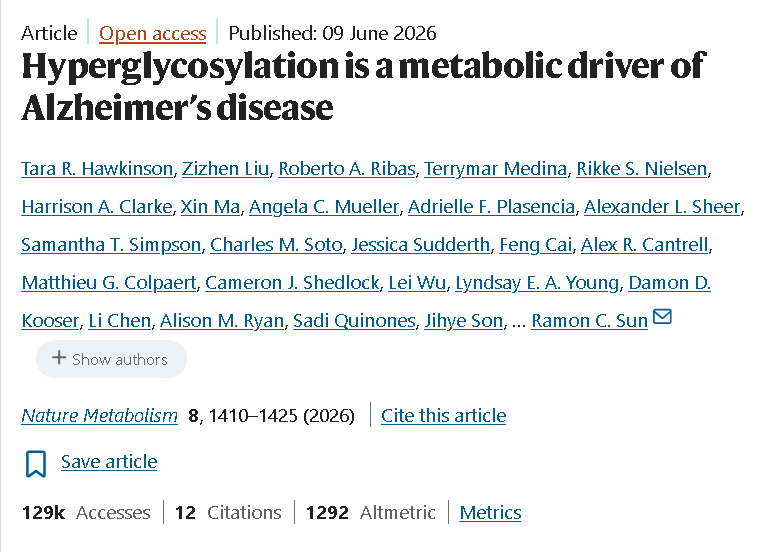

https://www.nature.com/articles/s42255-026-01538-4
플로리다 대학 연구팀의 연구 결과다.
글루코사민은 관절염과 관절 통증에 효과적인 영양제로
인기를 끌고 있는 상품 중 하나다.
그런데 인지 기능에 문제가 없는 사람이 먹는 건 괜찮지만,
이미 경도 치매 증세가 있는 사람이
글루코사민은 섭취하면 치매 증세가 악화될 수 있다는
연구 결과가 발표됐다.
글루코사민은 자연적으로 존재하는 당 분자로,
체내 당과 연결된 화합물인 글리칸 생성을 촉진한다.
글루코사민은 당성분이라 뇌가 화학 물질을 침입을 막는
뇌장벽을 통과하는 게 가능하다.
물론 뇌 대사 작용이 정상적인 사람이라면
이렇게 글루코사민이 뇌에 들어와도 큰 문제는 없다.
문제는 치매에 걸려 뇌 대사 작용이 정상적이지 않은 경우,
당성분이 뇌에 쌓여 설탕 코팅이 되버린다는 거.
정말 간단하게 말해서 뇌에 당뇨병이 일어난다는 거다.
뇌에 대사 장애가 발생하는 것으로 인해
치매 증세가 한층 더 악화된다는 이야기.
한니발이 좋아하겠네